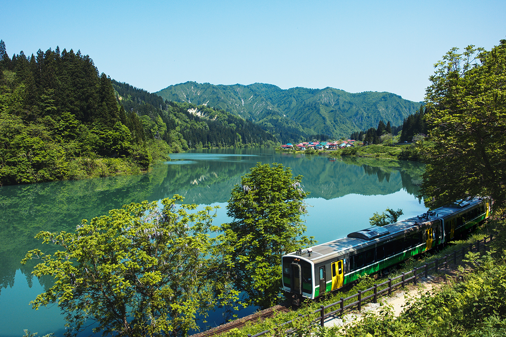
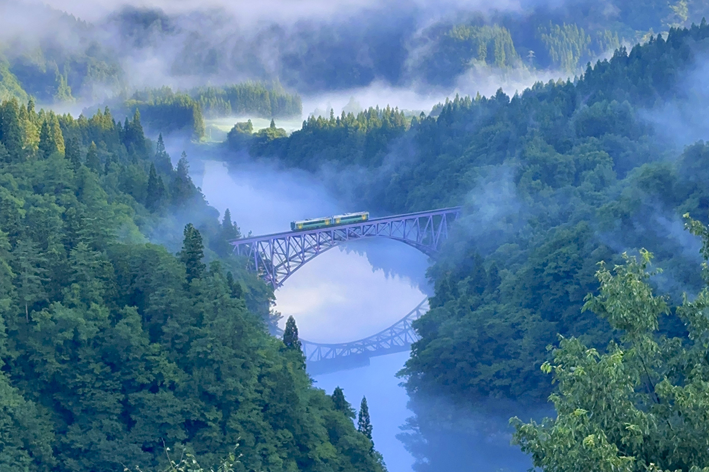

Префектура Фукусима · Айдзу · железная дорога
Линия Тадами: поезд вдоль горной реки из Айдзу в Ниигату

Линия JR Тадами соединяет Айдзу-Вакамацу в префектуре Фукусима со станцией Коидэ в соседней Ниигате и почти весь путь идёт вдоль реки Тадами. Её называют дорогой в затерянный край: за окном ущелья, мосты и горные деревни.
Маршрут
135 километров вдоль реки
Линия начинается на станции Айдзу-Вакамацу, в городе на западе префектуры Фукусима, и заканчивается на станции Коидэ в префектуре Ниигата. Длина пути 135,2 км, колея узкая, 1067 мм. Главные остановки по дороге: Айдзу-Янаидзу, Айдзу-Миясита, Айдзу-Кавагути и Тадами. Большая часть линии, вместе со станцией Тадами, лежит в Фукусиме.
Почти всю дорогу поезд идёт по долине реки Тадами и много раз переходит её по мостам. Один из них называется «Первый мост через реку Тадами». С мостов и из окон вагона открываются красивые горные ущелья.

Пейзажи
Деревня Оси и летняя зелень
Одно из живописных мест линии это горная деревня Оси у реки Тадами, известная своими видами. Поезд проходит совсем рядом с ней.
Актриса, которая любит местные железные дороги и выбирает их по видам за окном, советует ехать сюда летом: прохладное ущелье, яркая зелень гор и ощущение свежести, пока поезд бежит по долине.
В 2026 году линия работает по всей длине, но поездов немного. В октябре 2026 года по будням из Айдзу-Вакамацу до Коидэ шли три поезда в день, ещё несколько доходили только до Айдзу-Кавагути, а дорога до конца линии занимала около четырёх с половиной часов. Расписание лучше посмотреть заранее на сайте JR East.
Линия JR Тадами
- Как добраться
- от станции Айдзу-Вакамацу (префектура Фукусима) до станции Коидэ (префектура Ниигата), 135,2 км
- Сайт
- jreast.co.jp
Фото: Офис управления линией Тадами.